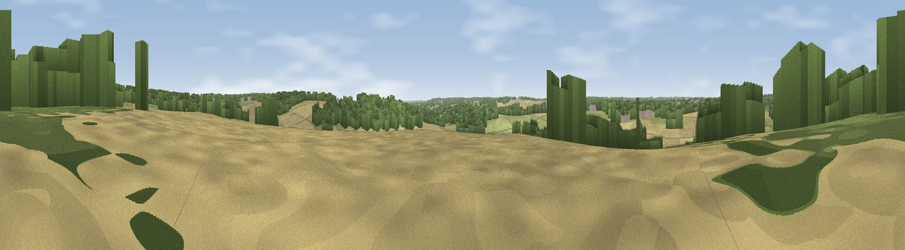

Viewpoint near Aston
#36457 in England · top 42% of its area beats it · near AstonWhere it is
The exact computed spot (SU 79325 83025). Click the marker for map links.
The view, rendered

A 360° render of this exact spot computed from the terrain model, tree cover and land cover — summer colours, afternoon light, calibrated against photographs of famous viewpoints. Real trees, hedges and buildings will differ in detail.
The panorama
Grey silhouette: terrain skyline in each direction (720 bearings, Earth curvature and refraction included). Dashed green: skyline with trees (+15 m) and buildings (+8 m) as obstacles. Blue strip: how far the ground is visible on each bearing.
Where the view opens
Wedge length = distance to the farthest visible ground on that bearing (vegetation-aware). Rings at 10, 25 and 50 km.
What fills the view
48% grassland · 29% woodland · 20% cropland · 2% water · 1% built-up
Angular shares of the visible panorama (visual magnitude), not map area. Landscape diversity 0.51 (0–1 Shannon).
Key numbers
More beautiful places nearby
The staircase of upgrades: each row has a higher view potential than everything closer. Driving times are estimates from straight-line distance, calibrated against real road routing — check an actual route before setting out.
| Place | Direction | Drive | Score |
|---|---|---|---|
| Viewpoint near Lower Shiplake | SSW · 3 km | ~6 min | 38.8 |
| Viewpoint near Crazies Hill | SSE · 3 km | ~8 min | 44.3 |
| Viewpoint near Hambleden | NNW · 3 km | ~8 min | 45.3 |
| Viewpoint near Knowl Hill | ESE · 4 km | ~8 min | 46.3 |
| Fultness Wood Hill | ENE · 7 km | ~14 min | 57.8 |
| Viewpoint near Cookley Green | NW · 14 km | ~25 min | 68.5 |
| Viewpoint near Watlington | NW · 14 km | ~25 min | 70.6 |
| Viewpoint near Lewknor | NNW · 15 km | ~26 min | 70.8 |
51.54056, -0.85759 · source: screening · position refined by local search. Computed location — check access rights before visiting.